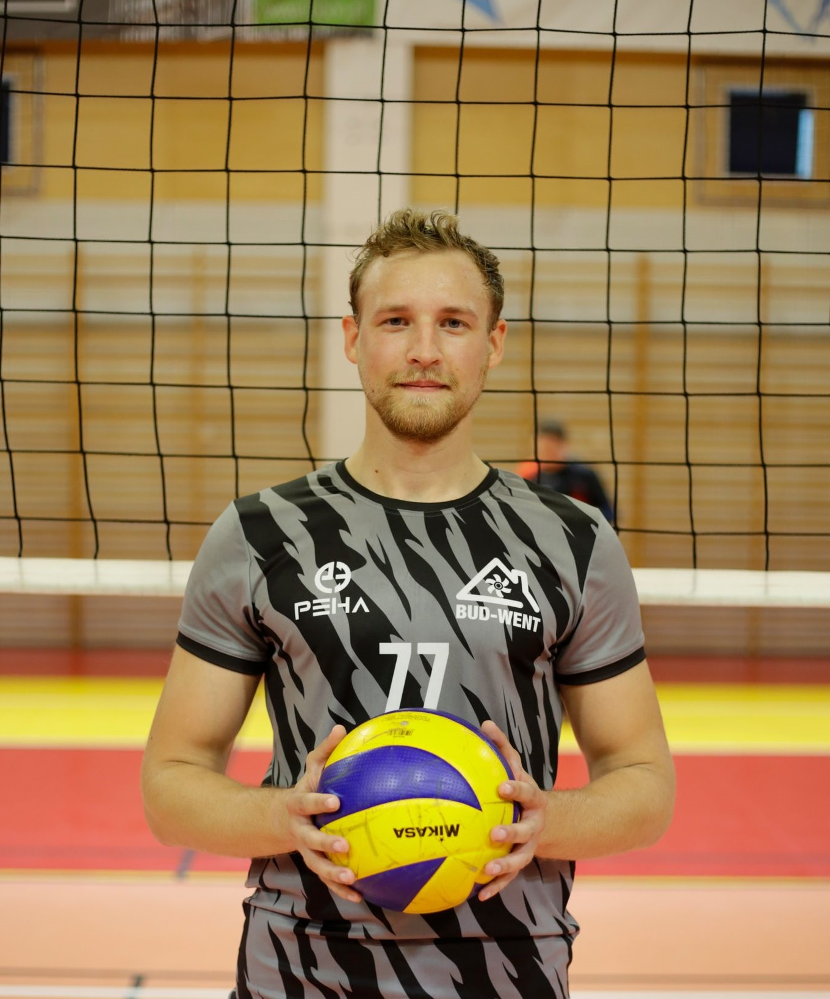

krótko o nas!
jesteśmy ekipą pasjonatów siatkówki.
niekórzy z nas trenowali od dzieciaka, część podłapała bakcyla
tego pięknego sportu
dopiero
w ekhm,
"dojrzałym" wieku .
drużyna została założona w 2019 roku przez naszego El Kapitano - Mateusza Filipiaka.
możesz podziwiać nasz kunszt podczas meczów w Lubońskiej Amatorskiej Lidze Siatkówki.
jeżeli lubisz sportową rywalizację i czujesz dreszczyk emocji podczas sportowej rywalizacji skontaktuj się z nami.
zapraszamy też do obserwowania naszych mediów społecznościowych.
do zobaczenia na boisku!